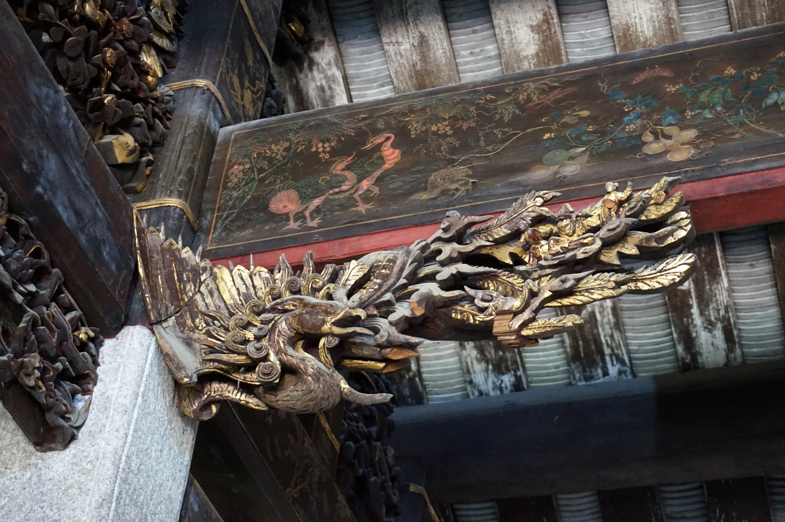
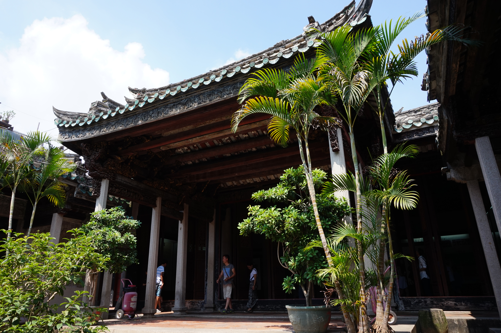
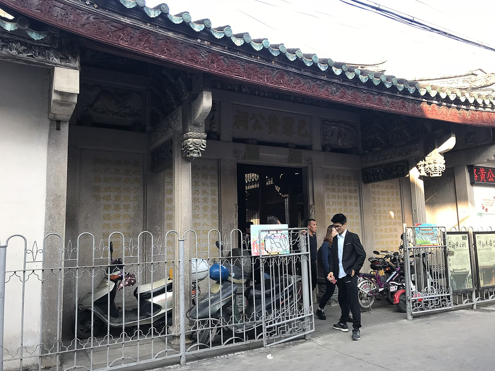
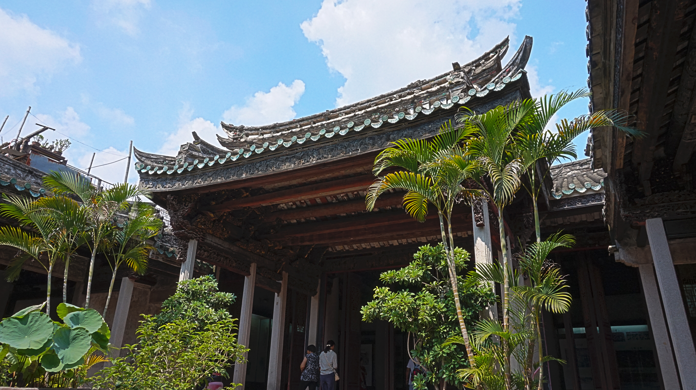
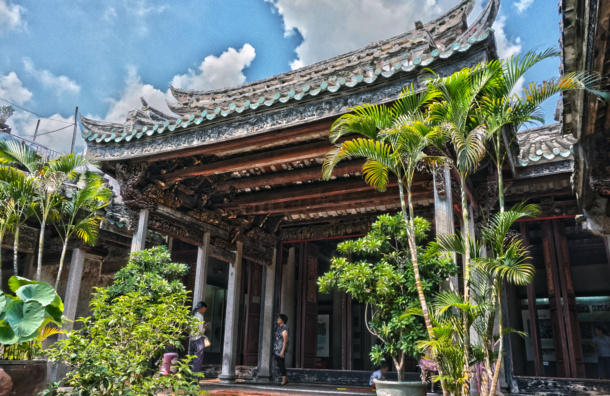
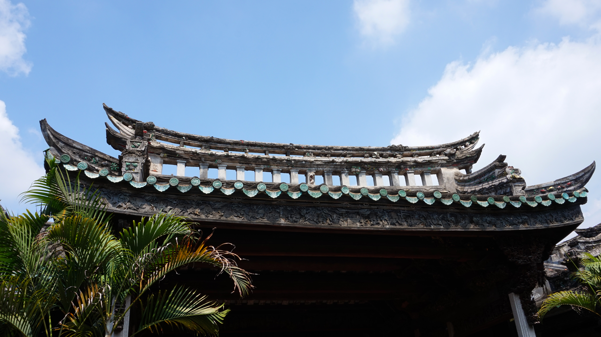

建筑年代
1887
光绪十三年。文史记录 ↗

完整照片 ↗
局部属于建筑，不是独立商品。
02 回到建筑
先看门额与门洞，再看内外的交界。封面里的凤凰木雕属于这座祠堂；局部的形象，需要回到建筑中理解。

完整照片 ↗03 空间阅读
从门前到院内，再回到构件。核对不同照片的关系，不把观察顺序当作现场路线。
天空、檐下与柱列形成内外层次。先辨认边界，再看人在其中的位置。
三猎 · 2016-10-04 · 院内来源摄影

完整照片 ↗厅堂记录 · 待补
独立空间影像、名称依据和所在位置待补。
不以院内照片代替厅堂记录。
06 人与建筑
照片中的人在院内活动，门洞、柱列和檐下与他们同框。相对位置能被观察；准确尺寸与人物身份不能由此推断。

完整照片 ↗07 时间与保护

完整照片 ↗08 建筑档案
精选对象与影像。拍摄、建筑年代与保护记录分别归档；完整出处可展开核对。
资料状态：年代有出处
地点：潮州；类型：祠堂。精确地址、建筑分期、尺度待补真实资料。资料状态：当前修缮待补
现有官方材料提供保护身份。文件时间、当前使用和修缮记录应分别核对，不把规划或保护身份当作工程完成状态。更多当代影像：
精确地址、空间测绘、材料研究、制作与修缮、人物口述和当前使用状态待补。完整摄影不等于完整建筑档案。
逐图来源与资料边界 ↗